HiC-TAD-Library
A Python library for visualizing and analyzing Hi-C data, focusing on Topologically Associating Domains (TADs), compartments, and insulation scores.
Installation
You can install the required dependencies using the provided Makefile:
make install
Required packages include: cooler, cooltools, bioframe, matplotlib, pandas, numpy, and alphagenome.
AlphaGenome Integration
This project now integrates AlphaGenome for high-resolution genomic predictions and visualizations.
To set up AlphaGenome:
1. Ensure your API key is in the .env file as ALPHA_GENOME_API_KEY.
2. Run make install-alphagenome.
Usage
Generated visualizations are saved in the media/ directory.
Quick Start
To install dependencies and run all visualizations:
make setup
Individual Commands
- Run Visualizations:
make run - Clean Output:
make clean
Visualizations
This library generates various Hi-C visualizations that reveal different aspects of 3D chromatin organization. Below are examples from two genomic regions: Sox11 (Chr12) and Mir9-2 (Chr13), demonstrating the full suite of analysis capabilities.
1. High-Resolution Contact Heatmaps
Standard square heatmaps display Hi-C contact frequencies, where darker/warmer colors indicate higher interaction frequencies. The diagonal represents self-ligation events, while off-diagonal patterns reveal TAD structures as triangular blocks of enriched interactions.
Sox11 Region (chr12:26-28 Mb)
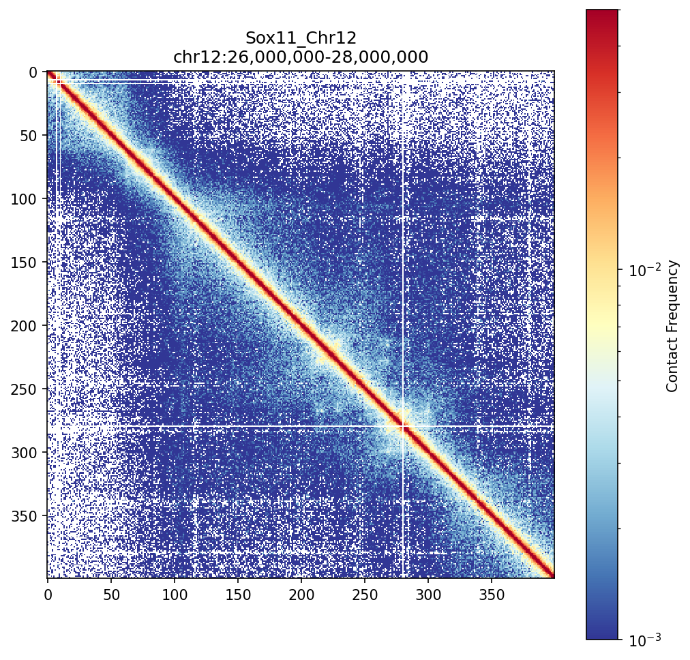
The Sox11 locus shows clear TAD structures visible as block-like enrichments along the diagonal. These self-interacting domains are fundamental units of chromatin organization.Mir9-2 Region (chr13:83.5-84.5 Mb)
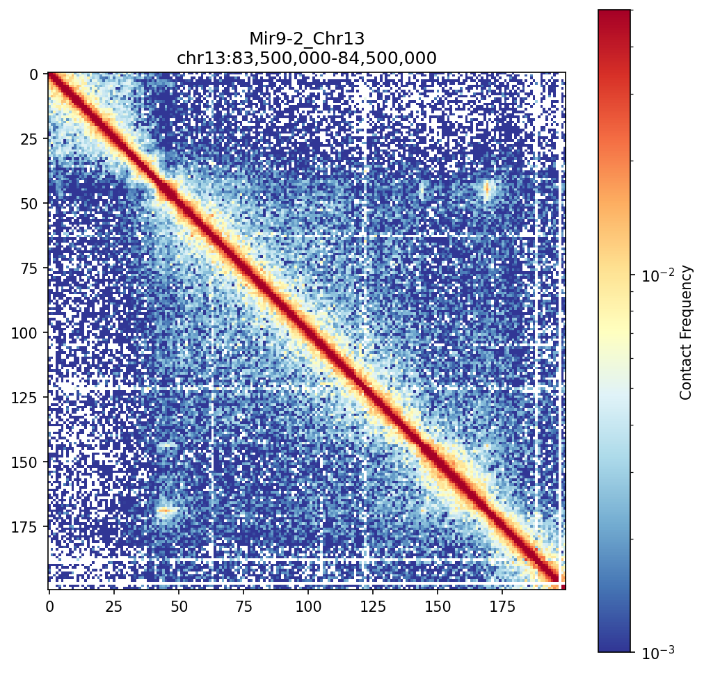
The Mir9-2 region demonstrates well-defined TAD boundaries (visible as transitions between enriched blocks) that compartmentalize the genome into functional units.2. Triangular Heatmaps
Rotated 45-degree views are the standard in Hi-C visualization. This transformation makes TAD boundaries appear as vertical valleys and highlights the hierarchical organization of chromatin domains.
Sox11 Region
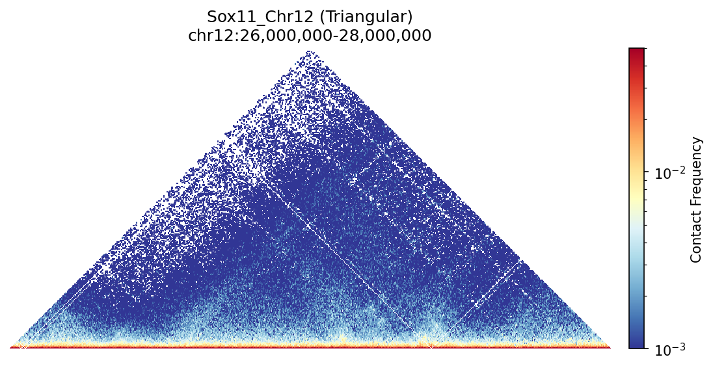
Triangular view of Sox11 clearly reveals TAD boundaries as vertical dips and the nested hierarchical structure of chromatin domains within larger compartments.Mir9-2 Region
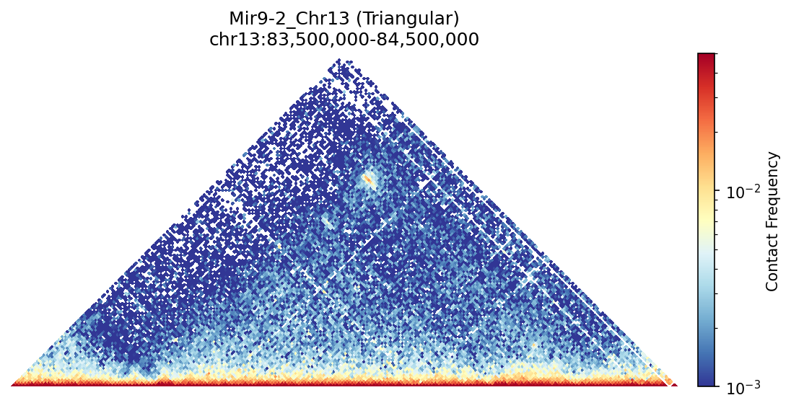
This rotated view makes it easier to see the insulation at TAD boundaries and the continuous interaction landscape across the region.3. Insulation Scores & Boundaries
Insulation score analysis uses sliding windows to quantify local interaction frequencies. Minima in the insulation track (valleys) correspond to TAD boundaries where interactions are depleted. Multiple window sizes (25kb, 50kb, 100kb) reveal boundaries at different scales.
Sox11 Region
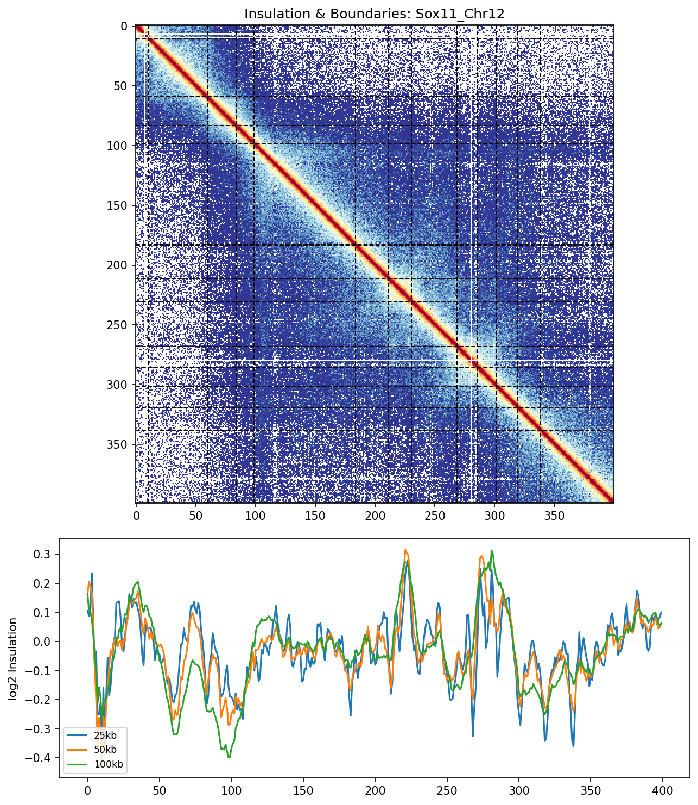
Top: Hi-C heatmap with detected boundaries marked as dashed lines. Bottom: Insulation scores at three window sizes. Boundaries appear where all three curves dip simultaneously, indicating robust structural transitions.Mir9-2 Region
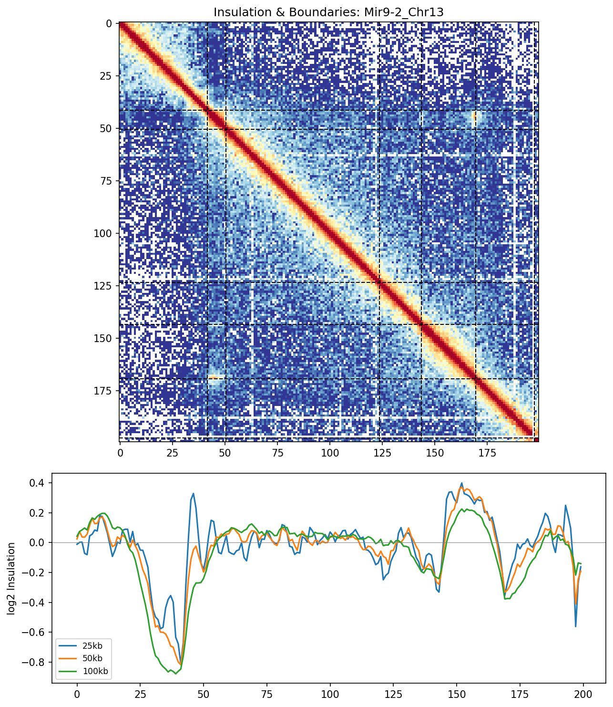
The insulation track reveals multiple boundary positions where chromatin interactions are depleted. Concordance across window sizes indicates strong, consistent boundaries.4. Directionality Index
The Directionality Index (DI) measures the bias in interaction directionality, helping identify TAD boundaries. Positive values (red) indicate downstream bias, negative values (blue) indicate upstream bias, and transitions through zero mark boundaries.
Sox11 Region
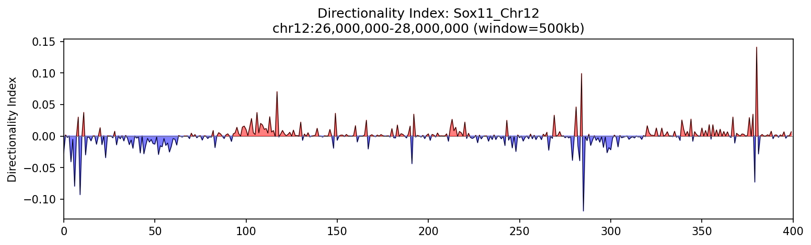
Directional bias changes reveal TAD organization. Red regions show loci preferentially interacting downstream, blue regions upstream. Transitions mark domain boundaries.Mir9-2 Region
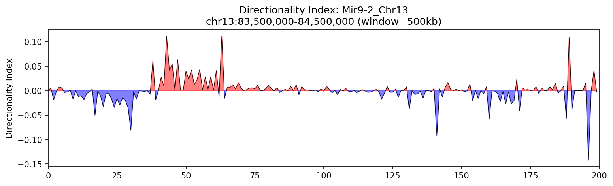
Clear directional changes across the Mir9-2 region highlight TAD boundaries and the bipartite nature of chromatin domains.5. Boundary Strength Analysis
Not all boundaries are equal. This analysis ranks boundaries by their prominence (depth of insulation minima), classifying them as strong (red), weak (orange), or sub-threshold (gray). Stronger boundaries typically mark more stable, functionally important domain transitions.
Sox11 Region
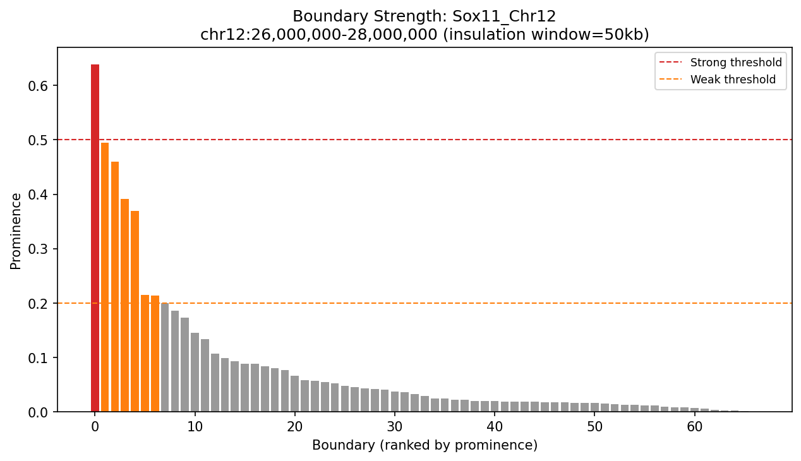
Ranked boundary prominence for Sox11. The tallest bars represent the strongest boundaries with the deepest insulation valleys. Strong boundaries (above red line) are most conserved across cell types.Mir9-2 Region
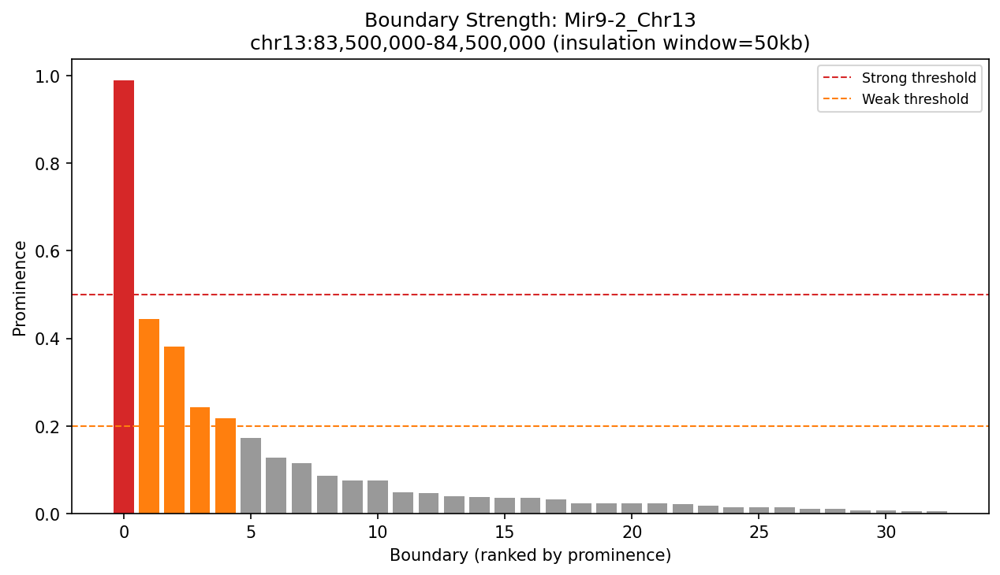
Distribution of boundary strengths at Mir9-2. Variation in prominence suggests a hierarchy of domain organization, with major boundaries separating large regions and minor boundaries creating sub-domains.6. Multi-Scale Insulation Analysis
Multi-scale analysis reveals how boundaries appear across different window sizes (5kb to 500kb). Persistent boundaries that span multiple scales are typically the most functionally significant, while scale-specific features may represent transient or cell-type-specific organization.
Sox11 Region
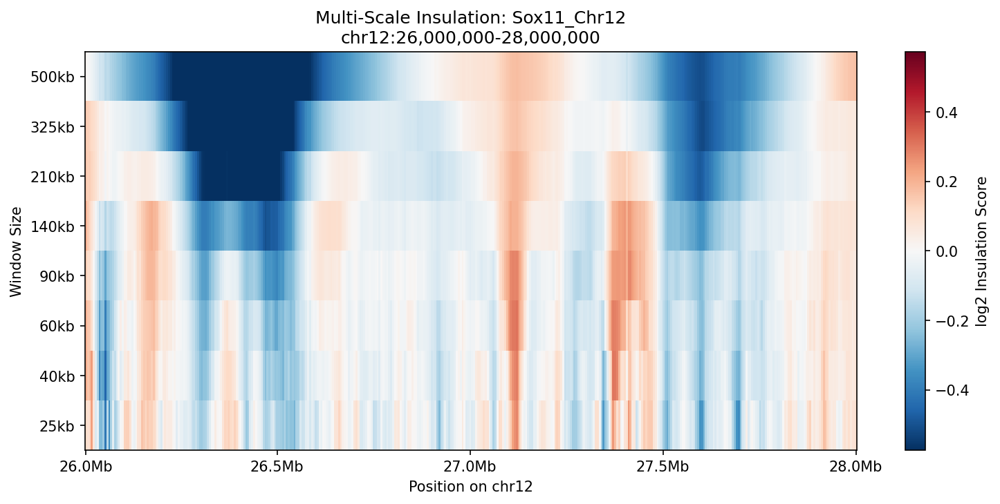
Heatmap showing insulation scores across genomic positions (x-axis) and window sizes (y-axis). Vertical blue streaks indicate boundaries persistent across scales. Red regions show locally high interaction.Mir9-2 Region
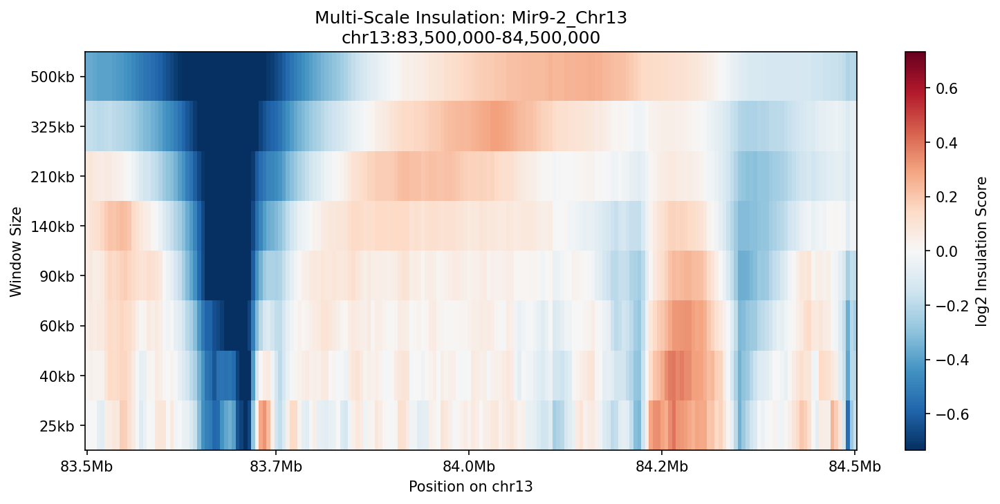
Scale-dependent boundary detection. Strong boundaries appear as vertical features spanning multiple window sizes, while weak or cell-type-specific boundaries may only be visible at specific scales.7. TAD Overlay on Contact Maps
TADs are called from boundary positions and overlaid on contact maps as L-shaped brackets marking the start and end of each domain. The bottom track shows the insulation score with detected boundaries highlighted.
Sox11 Region
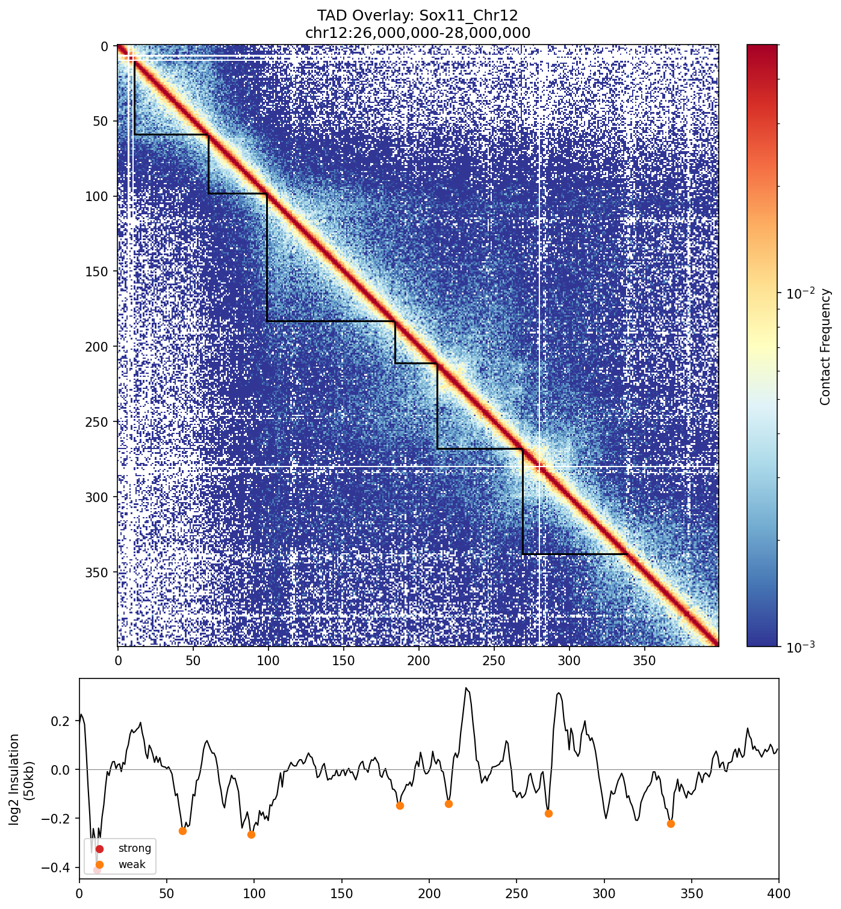
Top: Contact map with TAD boundaries drawn as L-shaped corners. Each TAD is a self-interacting chromatin domain. Bottom: Insulation score track with strong (red) and weak (orange) boundaries marked.Mir9-2 Region
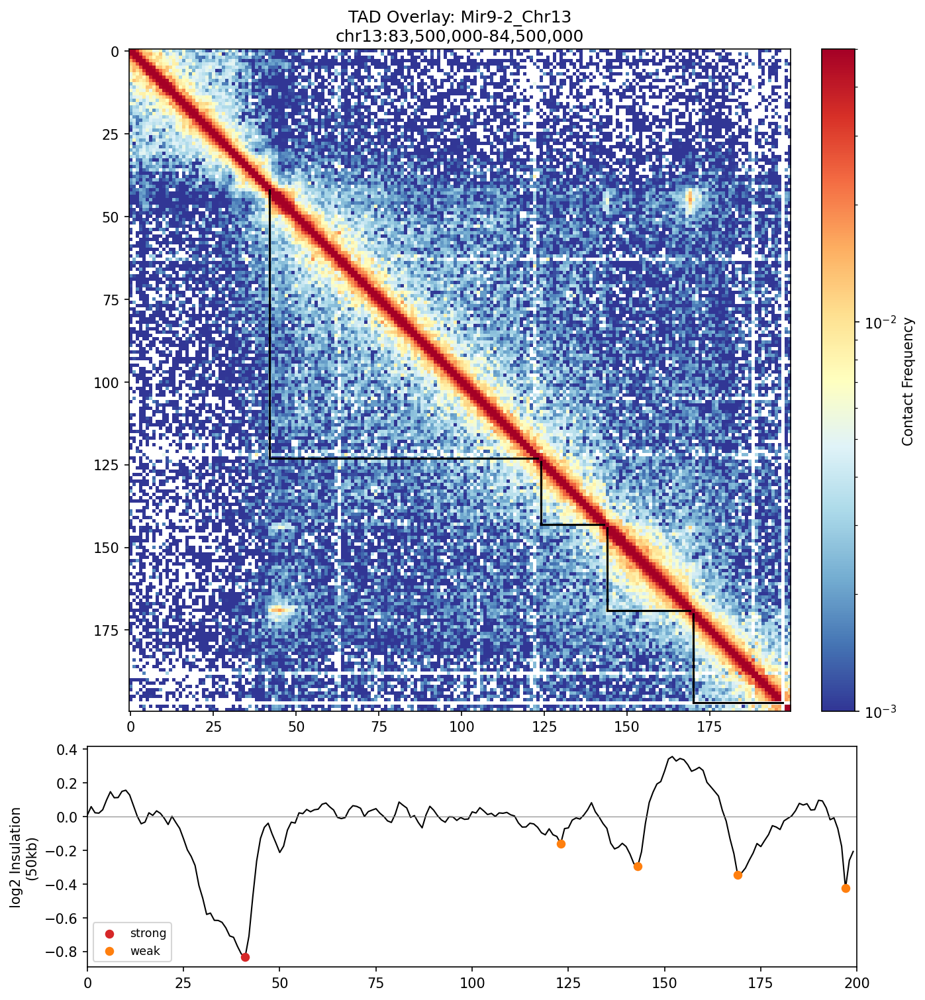
TAD calling results overlaid on the contact map. The L-shaped brackets delineate individual TADs, showing how the genome is partitioned into discrete interaction domains.8. Boundary Pileup Analysis
This meta-analysis aggregates all boundaries genome-wide to create an average "typical boundary" contact pattern. The characteristic corner peak shows that TAD boundaries prevent interactions across the boundary while allowing interactions within each domain.
Sox11 Region
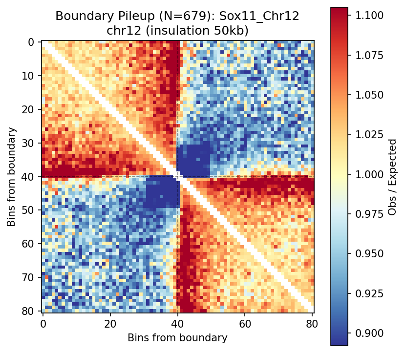
Average contact pattern around boundaries (N boundaries aligned at center). The characteristic square pattern with corner enrichment shows blocked interactions across boundaries and enriched within-TAD contacts.Mir9-2 Region
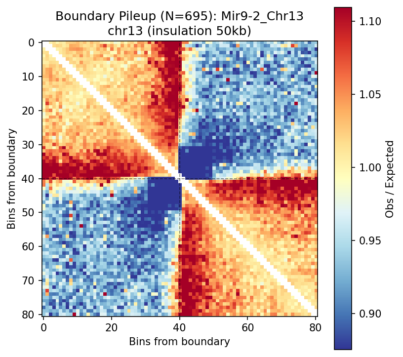
Pileup analysis reveals the stereotypical boundary signature: interactions are depleted at the boundary center (crosshairs) and form characteristic corner peaks flanking the boundary.9. Combined Multi-Panel Boundary Analysis
Comprehensive view integrating heatmap, TAD calls, insulation score, directionality index, and boundary positions in a single figure for complete chromatin architecture assessment.
Sox11 Region
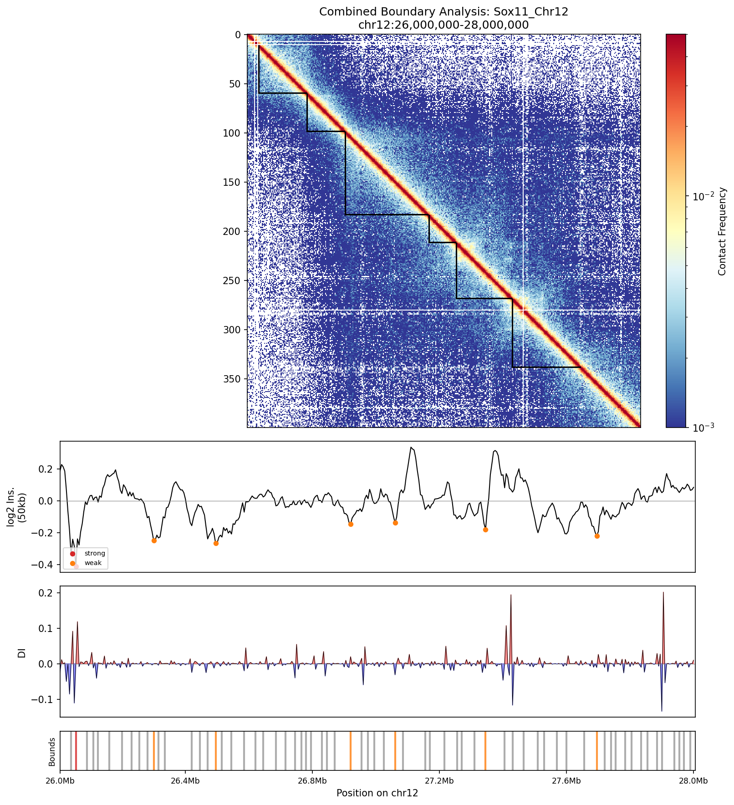
Integrated view: (1) Contact map with TAD brackets, (2) Insulation score with boundary classification, (3) Directionality index showing interaction bias, (4) Boundary tick marks showing positions and strengths. This comprehensive view enables correlation of multiple boundary detection methods.Mir9-2 Region
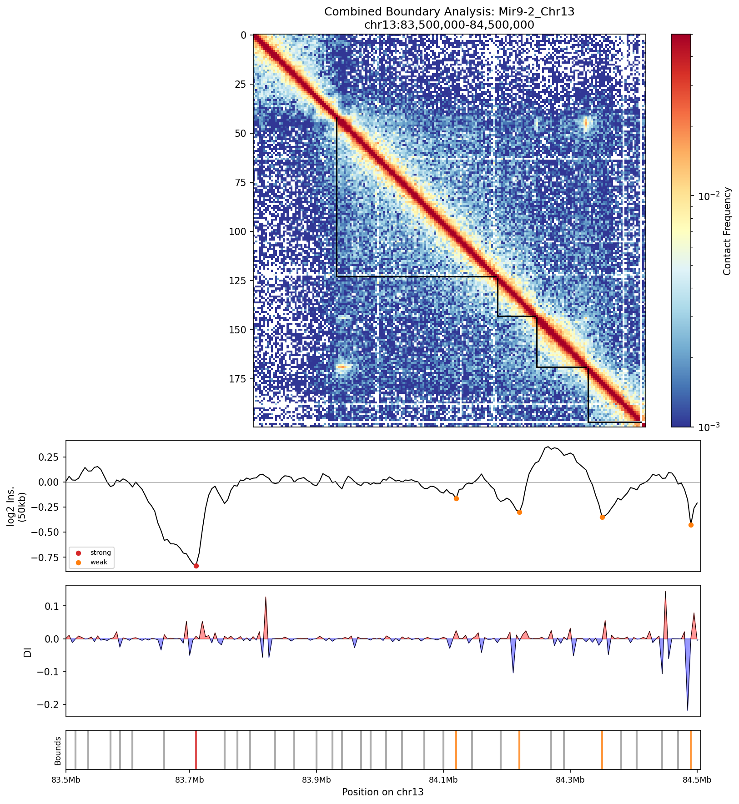
Complete boundary analysis panel. All tracks are aligned to facilitate comparison between detection methods. Strong boundaries show concordant signals across all metrics.10. A/B Compartments (E1 Eigenvector Track)
Large-scale genomic compartmentalization (A/B compartments) revealed by principal component analysis. A compartments (positive E1, red) are transcriptionally active and gene-rich; B compartments (negative E1, blue) are inactive and gene-poor. The triangular heatmap below shows characteristic checkerboard patterns of A-A and B-B interactions.
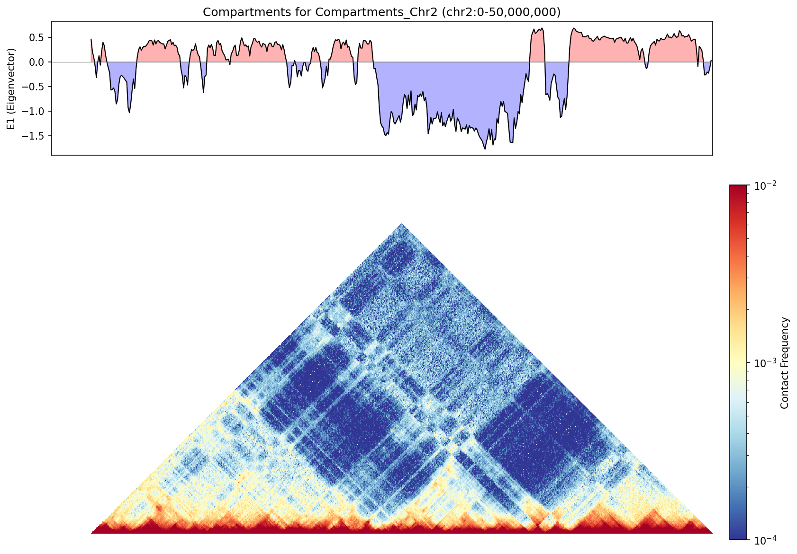
Top: E1 eigenvector track showing compartment assignments across Chr2. Bottom: Triangular contact map showing checkerboard pattern where A compartments (red) interact preferentially with other A compartments, and B (blue) with B.11. Saddle Plots
Saddle plots quantify compartment strength by binning genomic regions by E1 value and plotting interaction enrichment. Strong compartmentalization produces a saddle shape with high A-A (top-right) and B-B (bottom-left) interactions and depleted A-B interactions.
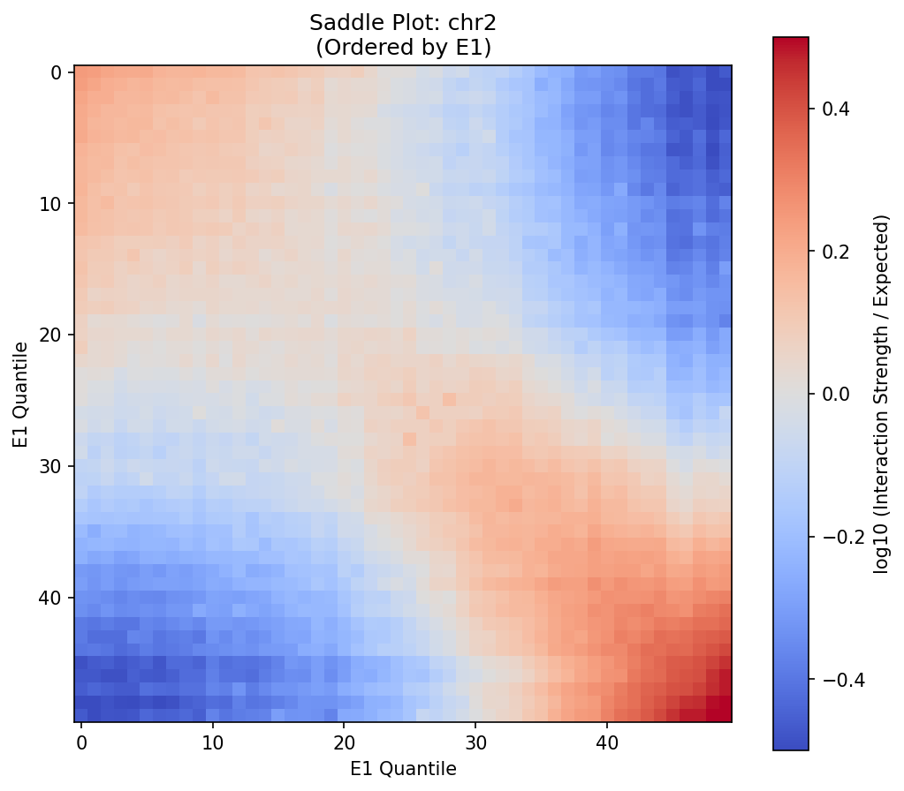
Interaction strength vs. E1 quantile. The saddle shape (corners elevated, center depressed) indicates strong compartmentalization. Top-right: A-A interactions (enriched). Bottom-left: B-B interactions (enriched). Center: A-B interactions (depleted).12. TAL1 Variant Analysis (AlphaGenome)
Using AlphaGenome AI models to predict the functional impact of oncogenic variants near the TAL1 locus, a master regulator in T-cell leukemia.
Variant Positions
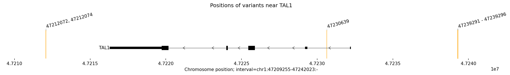
Genomic positions of oncogenic T-ALL variants that dysregulate TAL1 expression. The variants cluster in three regions: a new 3' enhancer (47212072-74), an intergenic region (47230639), and the MUTE site (47239291-296). The TAL1 gene is shown with its exon structure.Jurkat Variant Effect Prediction
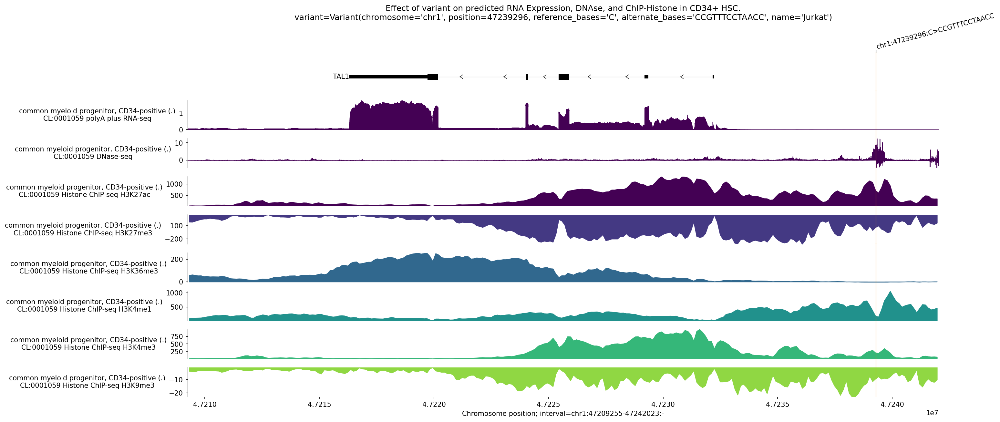
AlphaGenome prediction of the Jurkat variant (13bp insertion at chr1:47239296) on gene expression, chromatin accessibility, and histone modifications in CD34+ hematopoietic stem cells. Positive values (red) indicate increased signal; negative (blue) indicates decreased signal. The variant dramatically increases TAL1 RNA expression by creating a new enhancer element, explaining its oncogenic potential.13. AlphaGenome Predictions (Additional)
Advanced modalities including predicted contact maps, CTCF binding, and Virtual 4C tracks.
Predicted TADs and CTCF


Virtual 4C

14. DNA Deletion Effect Analysis (AlphaGenome)
In silico perturbation experiments using AlphaGenome AI to predict how structural variants (deletions) affect 3D genome organization. These analyses simulate the consequences of removing genomic regions—such as TAD boundaries, CTCF binding sites, or regulatory elements—and visualize the resulting changes in chromatin contact patterns.
Understanding the Visualizations
Each deletion analysis figure contains three components: 1. Gene Track (Top): Shows all protein-coding genes in the region with gene names labeled. The red shaded area marks the deleted region. 2. Wild-Type Contact Map (Left): AlphaGenome's predicted chromatin contact frequencies for the reference genome, showing TAD structures as diagonal blocks of high interaction (dark red). 3. After Deletion Contact Map (Right): Predicted contact frequencies after removing the specified genomic region, revealing how the deletion disrupts chromatin architecture.
Reading Contact Maps: - Diagonal blocks (red) = TADs (self-interacting chromatin domains) - Off-diagonal blocks = Long-range chromatin loops - Blue dashed lines = Boundaries of the deleted region - Color intensity = Contact probability (darker = stronger interactions)
OCT4 TAD Boundary Deletion (chr6:30,630,000-31,630,000)
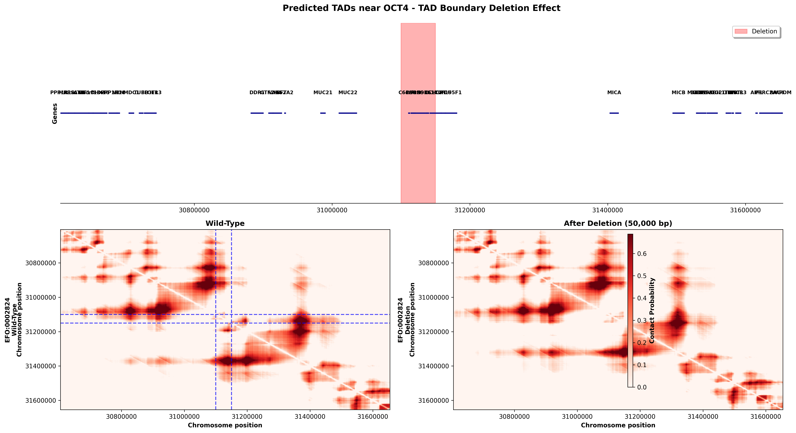
Deletion: 50kb removal at position 31,100,000-31,150,000 (potential TAD boundary region)
What This Shows: - The OCT4 locus contains multiple genes involved in pluripotency and development - The wild-type (left) shows complex TAD organization with strong diagonal contact blocks - After deletion (right), the contact pattern is disrupted around the deletion site - This demonstrates how TAD boundary deletions can alter compartment structure and potentially affect gene regulation - The deletion removes a structural element that normally insulates chromatin domains, leading to aberrant inter-domain contacts
Biological Significance: Deletions at TAD boundaries can cause "enhancer hijacking" where regulatory elements gain access to genes they normally don't control, potentially causing developmental disorders or cancer. The OCT4 region is critical for embryonic stem cell identity, so architectural disruptions here could affect cell fate decisions.
NANOG Enhancer Deletion (chr12:7,280,000-8,280,000)
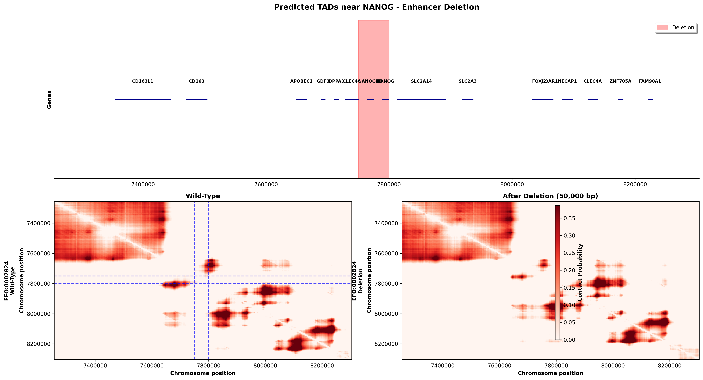
Deletion: 50kb removal at position 7,750,000-7,800,000 (regulatory element region)
What This Shows: - The NANOG region contains multiple genes including NANOG (pluripotency regulator) and KRAS (oncogene) - Wild-type shows well-defined TAD structures with strong contact domains - After deletion, the chromatin architecture is extensively remodeled - The deletion removes a genomic segment that may contain enhancers or CTCF sites that organize local chromatin structure - Notice how contact patterns both upstream and downstream of the deletion are altered, showing long-range effects
Biological Significance: This type of deletion could: 1. Remove enhancers that activate NANOG or nearby genes, potentially disrupting pluripotency networks 2. Disrupt CTCF loop anchors, allowing inappropriate gene-enhancer contacts 3. Alter TAD boundaries, changing the regulatory landscape across hundreds of kilobases
Such structural variants are found in developmental disorders and cancers where precise gene regulation is critical.
SOX2 Regulatory Element Deletion (chr3:181,210,000-182,210,000)
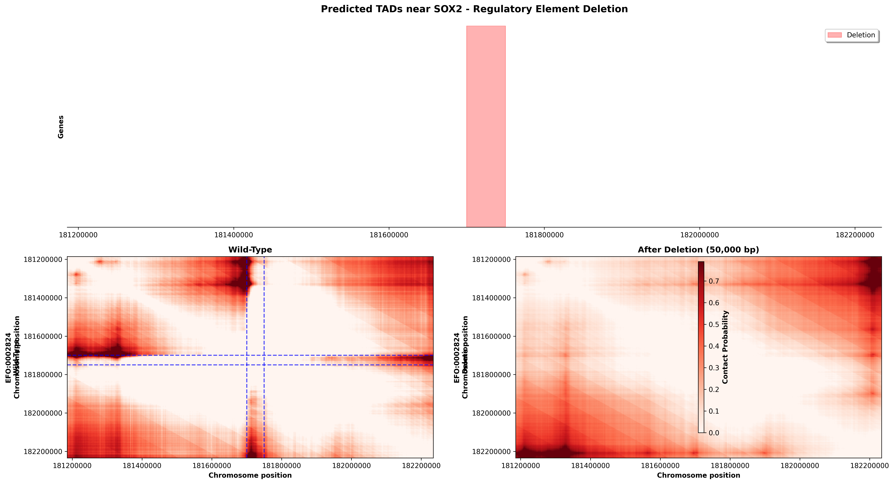
Deletion: 50kb removal at position 181,700,000-181,750,000 (regulatory region)
What This Shows: - The SOX2 locus is a master regulator of neural development and stem cell maintenance - Wild-type displays characteristic TAD organization with strong self-interactions (diagonal red blocks) - After deletion, contact maps show altered interaction patterns, particularly affecting the middle of the region - The symmetric nature of contact map changes reflects the biophysical constraints of chromatin looping - Blue dashed lines mark where the deletion occurred, showing immediate and distal effects on chromatin folding
Biological Significance: SOX2 is essential for: - Neural stem cell maintenance - Embryonic development - Cellular reprogramming (iPS cell generation)
Deletions in this region could: - Disrupt long-range enhancer-promoter contacts essential for SOX2 expression - Alter TAD insulation, causing misregulation of nearby genes - Lead to neurodevelopmental disorders when occurring in human patients
Key Insight: Even deletions that don't directly affect coding sequences can have profound effects by reorganizing 3D chromatin architecture and disrupting regulatory element positioning.
15. Mouse Insulator Deletion Analysis (AlphaGenome, mm10)
In silico prediction of insulator deletion effects in mouse across two cell types suggested by the PI. Regions provided by collaborators studying inner ear development (mm10 reference).
Cell Types Used
| Ontology | Name | Rationale |
|---|---|---|
CL:0000207 |
Olfactory receptor cell | Primary sensory neuron; cranial placode origin — closest available proxy to inner ear hair cells |
EFO:0004038 |
Mouse embryonic stem cell | PI-suggested; shows baseline pluripotent chromatin organization |
Note on inner ear ontology terms:
UBERON:0001846(internal ear) exists in AlphaGenome but only for CAGE output, not contact maps. GO otic placode terms (GO:1905040,GO:0030916,GO:0071599,GO:0043049) and otic placode UBERON terms (UBERON:0003249,UBERON:0003069) are not present in the mouse contact map training data. Only 8 mouse contact map tracks exist in total.
Each region produces 5 figures: WT|Deletion|Diff for each cell type, plus a cell-type comparison figure.
Jingyun's Region — chr13:83,739,797-83,745,138 (5,342 bp)
PI note: The deletion site falls within the Mef2c gene body (the only annotated transcript in the 1 MB window). Coordinates should be verified with Jingyun — the intended target may be an insulator near Mef2c rather than within it.
Olfactory receptor cell (CL:0000207)
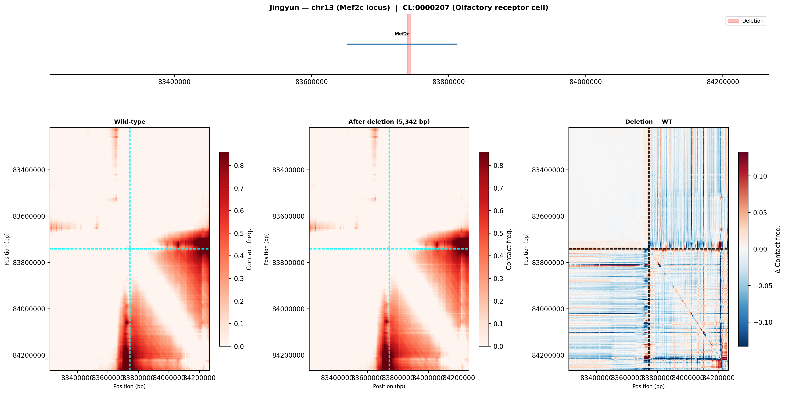
Wild-type (left): a dense TAD occupies the lower-right half of the window with Mef2c at its core. After deletion (middle): the TAD structure is largely preserved but the diagonal contact pattern shifts. Difference map (right): widespread blue (lost contacts) radiating from the deletion site, with red ectopic contacts appearing across the former boundary — consistent with loss of insulator function.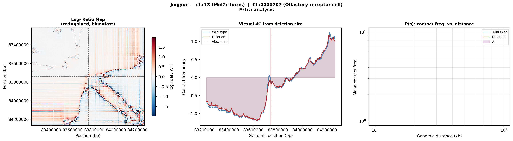
Log₂ ratio (left): strong depletion (blue) in the lower-right TAD body and gain (red) near the deletion boundary. Virtual 4C (middle): contacts from the deletion viewpoint are redistributed — the deletion curve (red) shows reduced near-cis interactions and altered long-range contacts. P(s) curve (right): both curves follow typical polymer decay but diverge at mid-range distances (~100–400 kb), indicating the deletion primarily disrupts TAD-scale organization.Mouse embryonic stem cell (EFO:0004038)
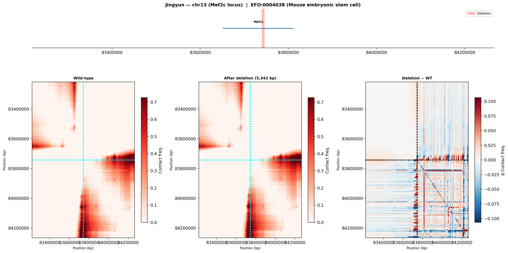
The ES cell wild-type shows a more diffuse contact pattern than olfactory cells, consistent with the open, pluripotent chromatin state of stem cells. After deletion, the difference map shows a qualitatively similar disruption pattern — suggesting the insulator function at this site is not highly cell-type-specific.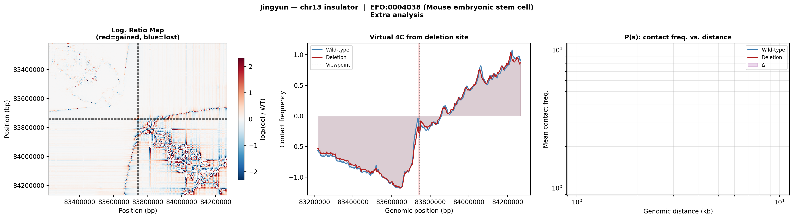
Log₂ ratio and virtual 4C confirm similar contact redistribution in ES cells. The P(s) curve divergence occurs at similar distances to the olfactory cell result, reinforcing that the deletion disrupts TAD-scale contacts regardless of cell type.Cell type comparison
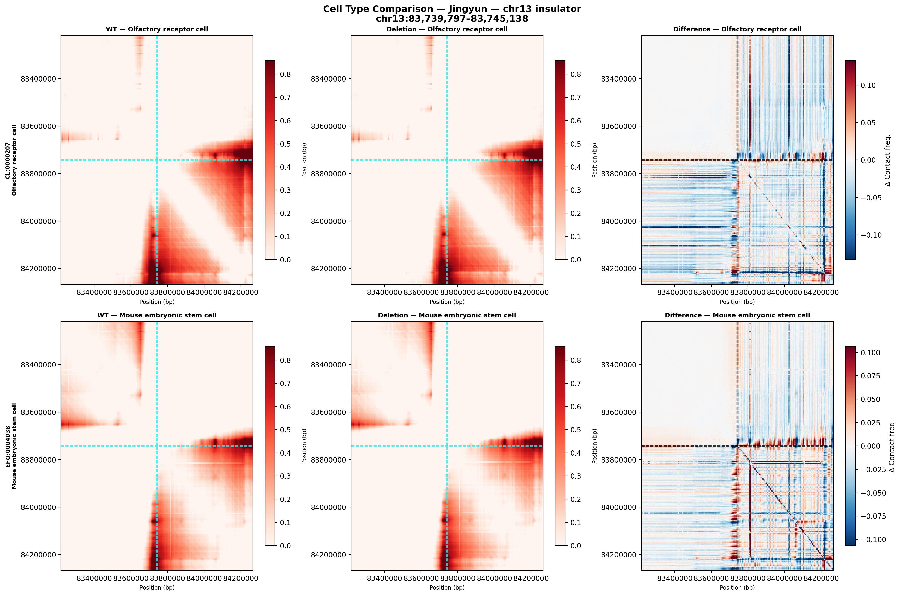
Direct comparison of both cell types at the same color scale. The olfactory receptor cell (top row) shows stronger, more defined TAD boundaries in the wild-type. The ES cell (bottom row) has a more homogeneous contact pattern. Both show directionally similar deletion effects in the difference map, but the ES cell exhibits less pronounced boundary disruption — consistent with its globally more open chromatin.Biological significance: Mef2c is a master regulator of inner ear hair cell differentiation and survival. Deletion of regulatory sequence within or near Mef2c could disrupt the TAD boundary that normally restricts enhancer access, potentially causing ectopic activation or silencing of Mef2c.
Edward's Region — chr12:27,333,532-27,336,455 (2,924 bp)
No protein-coding genes are annotated within the 1 MB analysis window (GENCODE M23), suggesting this deletion targets an intergenic regulatory element or insulator.
Olfactory receptor cell (CL:0000207)
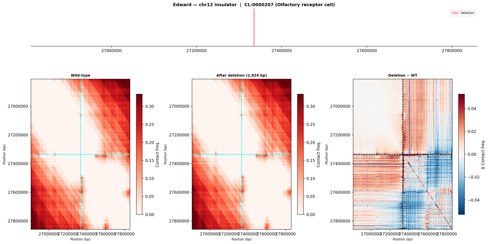
Wild-type (left): two moderately separated contact domains flank the deletion site. After deletion (middle): the inter-domain boundary weakens. Difference map (right): blue signal (contact loss) concentrated within the left-hand domain and red signal (contact gain) across the former domain boundary — indicative of partial TAD merging.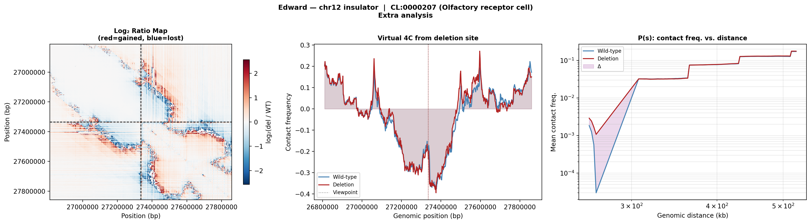
Log₂ ratio (left): the deletion creates a stripe of gained contacts spanning across the original boundary, visible as a red cross-shaped pattern. Virtual 4C (middle): contacts from the deletion viewpoint shift from local interactions to broader, longer-range contacts. P(s) curve (right): the deletion curve rises above wild-type at mid-range distances, confirming increased long-range contacts after boundary loss.Mouse embryonic stem cell (EFO:0004038)
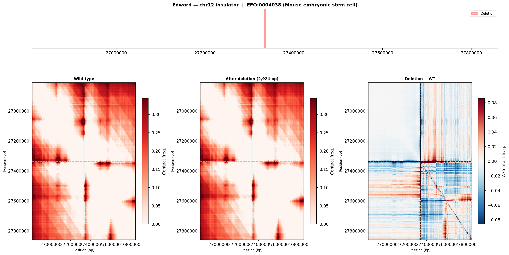
ES cells show less defined domain structure in the wild-type, but the deletion still produces a detectable shift in contact patterns. The difference map shows a subtler effect compared to olfactory cells, consistent with weaker boundary strength in pluripotent chromatin.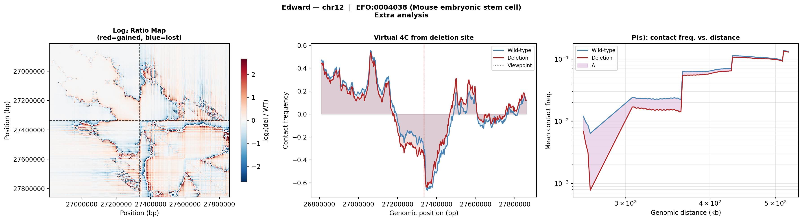
The virtual 4C and P(s) curves for ES cells show smaller deletion-induced changes than olfactory cells, suggesting the insulator at this site is more functionally important in differentiated sensory neurons than in stem cells.Cell type comparison
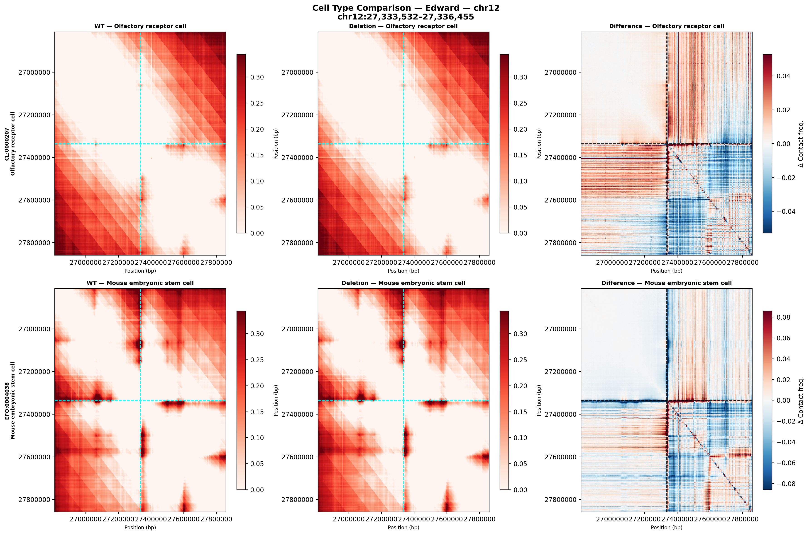
The chr12 insulator shows a larger effect in olfactory receptor cells (top) than ES cells (bottom), in contrast to the chr13 Mef2c region where both cell types responded similarly. This suggests the chr12 insulator is more cell-type-specific in its boundary activity — potentially relevant to inner ear-specific gene regulation.Biological significance: The absence of annotated genes at this locus suggests this deletion targets a non-coding regulatory element — possibly a CTCF anchor or enhancer that organizes chromatin structure. The stronger effect in differentiated sensory neurons vs. stem cells implies this element gains insulator activity during neuronal differentiation.
Technical Details: How Deletion Analysis Works
-
AlphaGenome Prediction: Google DeepMind's AlphaGenome AI model predicts chromatin contact frequencies from DNA sequence alone, trained on thousands of Hi-C experiments.
-
In Silico Deletion: We create two predictions: - Reference: Wild-type genomic sequence → Contact map - Variant: Sequence with deletion → Contact map showing architectural changes
-
Side-by-Side Comparison: Visual comparison reveals how structural variants affect: - TAD boundaries and insulation - Long-range chromatin loops - Compartmentalization (A/B compartments) - Gene regulatory landscapes
-
Applications: - Disease variant interpretation: Predict pathogenicity of structural variants found in patients - CRISPR experiment design: Preview deletion effects before costly experiments - Evolutionary genomics: Understand how structural variants shape genome evolution - Therapeutic target identification: Find chromatin architectural features essential for disease
Data sourced from 4DNucleome and AlphaGenome